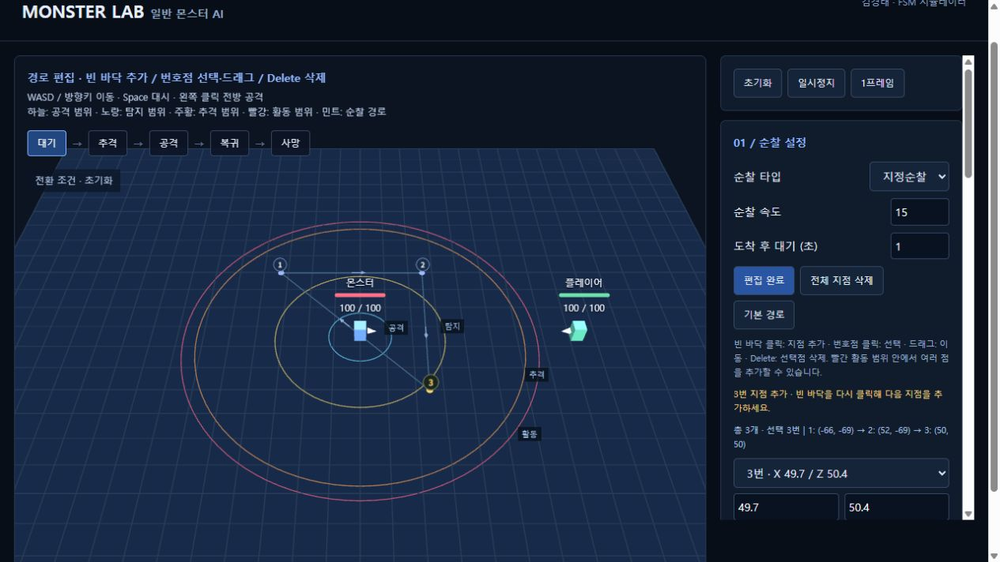

01 / MONSTER AI SIMULATION시뮬레이터 실행 ↗
일반 몬스터 AI 시뮬레이터
몬스터의 대기·추격·공격·복귀 상태를 화면에서 확인할 수 있도록 시뮬레이터로 구성했습니다. 위치와 범위 값을 바꾸며 상태 전환과 행동 로그를 검토했습니다.
기획상태와 전환 조건 정의
AI 활용규칙을 확인할 수 있는 시뮬레이터 구현 보조
확인거리·범위 변경에 따른 행동과 로그 검토

직접 실행 ↗HOW I USED AI
AI 도구를 활용해 기획 내용을 빠르게 구현 가능한 형태로 옮기고, 직접 동작을 살펴보며 규칙을 검토했습니다.
아래 두 작업에서 무엇을 확인했는지 보여드립니다.
몬스터의 대기·추격·공격·복귀 상태를 화면에서 확인할 수 있도록 시뮬레이터로 구성했습니다. 위치와 범위 값을 바꾸며 상태 전환과 행동 로그를 검토했습니다.

직접 실행 ↗마우스 입력에 따라 공격 애니메이션이 이어지는 기본 콤보 동작을 테스트했습니다. 입력과 다음 공격의 연결을 영상으로 확인할 수 있습니다.